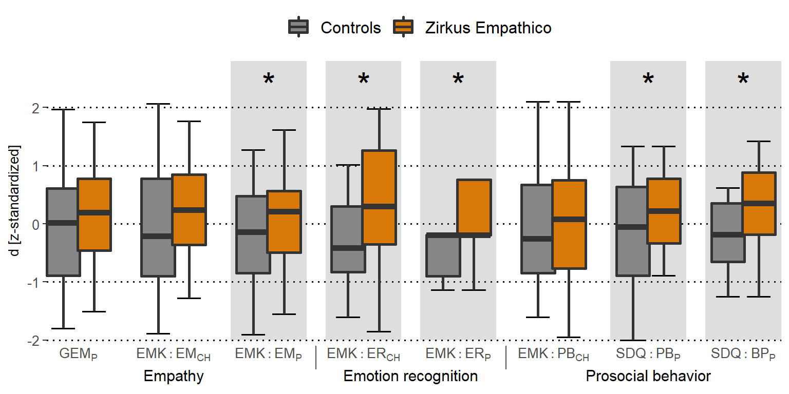

Primary outcome: Empathy
To delineate improvements in single SECs, we calculated separate analyses of covariance (ANCOVAs) for each primary and secondary outcome with training as between factor, covarying for participant’s pre-training scores.
We did not detect group differences for empathy measured by the Griffith Empathy Measure (GEM) parent rating (GEM P: F(1,57) = 0.66, p = 0.42). In contrast, Inventory to survey of emotional competences for three- to six-year-old (EMK 3-6) parent ratings indicated larger increases in empathy for the Zirkus Empathico group compared to controls (EMK EM_P: F(1,57) = 6.32, p = 0.02, \(\eta^{2}{p}\) = 0.10). However, no difference was found for EMK child assessments (EMK EM_CH: F(1,57) = 1.72, p = 0.26).
# Separate data for CG and TG
qn_data_d_scors = subset(qn_data, select = c(group, zd_GEM_Total, zd_EMK_EM_CH, zd_EMK_EM_P,
zd_EMK_EK_CH, zd_EMK_EK_P, zd_EMK_PB_CH, zd_SDQ_PB, zd_SDQ_Total))
qn_data_d_scors_TG = subset(qn_data_d_scors, group == "TG")
qn_data_d_scors_TG = gather(qn_data_d_scors_TG, measure, TG, zd_GEM_Total:zd_SDQ_Total,
factor_key = TRUE)
qn_data_d_scors_CG = subset(qn_data_d_scors, group == "CG")
qn_data_d_scors_CG = gather(qn_data_d_scors_CG, measure, CG, zd_GEM_Total:zd_SDQ_Total,
factor_key = TRUE)
names(qn_data_d_scors_CG)[3] = "TG"
qn_data_d_scors = rbind(qn_data_d_scors_TG, qn_data_d_scors_CG)
names(qn_data_d_scors)[3] = "score"
# Visualize separate training outcomes
sep_scores_box = ggplot(qn_data_d_scors, aes(x = measure, y = score, fill = group)) +
# add shaded areas
annotate("rect", xmin = 2.6, xmax = 3.4, ymin = -2, ymax = 2.8, alpha = 0.2) + annotate("rect",
xmin = 3.6, xmax = 4.4, ymin = -2, ymax = 2.8, alpha = 0.2) + annotate("rect",
xmin = 4.6, xmax = 5.4, ymin = -2, ymax = 2.8, alpha = 0.2) + annotate("rect",
xmin = 6.6, xmax = 7.4, ymin = -2, ymax = 2.8, alpha = 0.2) + annotate("rect",
xmin = 7.6, xmax = 8.4, ymin = -2, ymax = 2.8, alpha = 0.2) + stat_boxplot(geom = "errorbar",
width = 0.5, size = 0.7, coef = 1, position = position_dodge(0.65)) + geom_boxplot(coef = 1,
outlier.shape = NA, width = 0.7, lwd = 1, alpha = 1, position = position_dodge(0.65)) +
labs(x = "", y = "d [z-standardized]") + scale_x_discrete(labels = c(expression(GEM[P]),
expression(EMK:EM[CH]), expression(EMK:EM[P]), expression(EMK:ER[CH]), expression(EMK:ER[P]),
expression(EMK:PB[CH]), expression(SDQ:PB[P]), expression(SDQ:BP[P]))) + scale_fill_manual(labels = c("Controls",
"Zirkus Empathico"), values = ZE_col) + theme_bw() + theme_SN + theme(axis.text.x = element_text(size = 10),
legend.position = "top", legend.title = element_blank(), axis.title.y = element_text(size = 10,
margin = margin(t = 0, r = 5, b = 0, l = 0)), axis.ticks.x = element_blank(),
axis.text.y = element_text(size = 10)) + coord_cartesian(ylim = c(-2, 2.8), expand = FALSE,
clip = "off") + # add asteriks
annotate("text", x = c(3, 4, 5, 7, 8), y = 2.4, label = "\"*\"", fontface = "bold",
size = 9, parse = TRUE) + # add shaded x-axis extension
annotate("text", x = 2, y = -2.6, label = "Empathy", size = 4) + annotate("text",
x = 4.5, y = -2.6, label = "Emotion recognition", size = 4) + annotate("text",
x = 7, y = -2.6, label = "Prosocial behavior", size = 4) + annotate("segment",
x = 3.5, xend = 3.5, y = -2.1, yend = -2.5, colour = "gray31") + annotate("segment",
x = 5.5, xend = 5.5, y = -2.1, yend = -2.5, colour = "gray31")
# Show plot
sep_scores_box
ggsave(sep_scores_box, file = "zerp_sec_measures.tiff", dpi = 300)Parent and child ratings of socio-emotional competence (SEC) reports. Orange: Zirkus Empathico group. Grey: Control training. Error bars indicate standard errors (SE); d z-standardized represents the z-standardized change scores (difference between post- and pre-training values). GEM = Griffith Empathy Measure; EMK = Inventory to survey of emotional competences for three- to six-year-olds; EM = Empathy; ER = Emotion recognition; SDQ = Strength and Difficulties Questionnaire; PB = Prosocial behavior; BP = Behavioral problems. P = parent rating; CH = child assessment.
GEM
gem_total_an = aov_ez("ID", "zd_GEM_Total", qn_data, between = c("group"), covariate = c("z_GEM_T1"),
observed = c("z_GEM_T1"), factorize = FALSE, anova_table = list(correction = "none",
es = "pes"))
pander(gem_total_an$anova_table)| num Df | den Df | MSE | F | pes | Pr(>F) | |
|---|---|---|---|---|---|---|
| group | 1 | 57 | 0.9706 | 0.6569 | 0.01139 | 0.421 |
| z_GEM_T1 | 1 | 57 | 0.9706 | 2.995 | 0.04993 | 0.08892 |
EMK 3-6 EM CH
# ANCOVA EMK_EM_CH
EMK_EM_CH_an = aov_ez("ID", "zd_EMK_EM_CH", qn_data, between = c("group"), covariate = c("z_EMK_EM_CH_T1"),
observed = c("z_EMK_EM_CH_T1"), factorize = FALSE, anova_table = list(correction = "none",
es = "pes"))
pander(EMK_EM_CH_an$anova_table)| num Df | den Df | MSE | F | pes | Pr(>F) | |
|---|---|---|---|---|---|---|
| group | 1 | 57 | 0.8305 | 1.718 | 0.02926 | 0.1952 |
| z_EMK_EM_CH_T1 | 1 | 57 | 0.8305 | 12.79 | 0.1833 | 0.0007187 |
EMK 3-6 EM P
EMK_EM_P_an = aov_ez("ID", "zd_EMK_EM_P", qn_data, between = c("group"), covariate = c("z_EMK_EM_P_T1"),
observed = c("z_EMK_EM_P_T1"), factorize = FALSE, anova_table = list(correction = "none",
es = "pes"))
pander(EMK_EM_P_an$anova_table)| num Df | den Df | MSE | F | pes | Pr(>F) | |
|---|---|---|---|---|---|---|
| group | 1 | 57 | 0.8216 | 6.321 | 0.09982 | 0.01478 |
| z_EMK_EM_P_T1 | 1 | 57 | 0.8216 | 11.91 | 0.1728 | 0.00106 |